French Paintings on Stamps, from the Louvre Museum
|
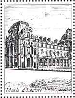 |

Old French Masters
on Stamps of France
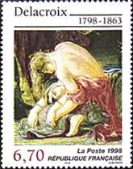
|
There is only one thing
that interests man,
The Louvre museum has custody of approximately 6,000 European
paintings, completed between the end of the 13th century and the
middle of the 19th century. As the conservatory of French painting,
the Louvre also aims to reflect all the artistic cultures of Europe.
Its origin goes back to the "Cabinet des tableaux"
constituted at Fontainebleau by François I at the beginning of the
16th century, which was greatly enriched from the beginning of the
17th century. Tip:
Point on the stamps with the mouse index for more information about
the works of art displayed and about the stamps.
|
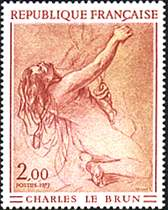 |
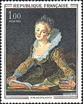 |
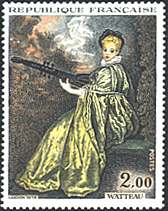 |
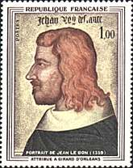 |
At the end of Louis XV's reign it included 1,478 paintings by masters, making it one of the richest European collections of the time.
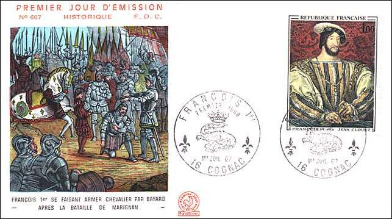
When the "Muséum des Arts" was opened at the Louvre in 1793, the collections from the "Académie royale de peinture et de sculpture" and paintings confiscated from "émigrés" and the church were added to the royal fund of paintings. For the sake of clarity for visitors, the works were organized in 1794 into national schools.
|
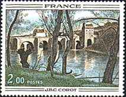 |
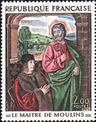 |
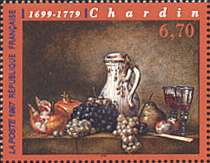 |
Since then there has been an active policy of increasing the collections; purchases (Campana collection in 1862) and donations (Doctor La Caze, 1869; Thomy Thiéry, 1902; Moreau-Nélaton, 1906; Chauchard, 1909, etc.) have enriched the collection of paintings.
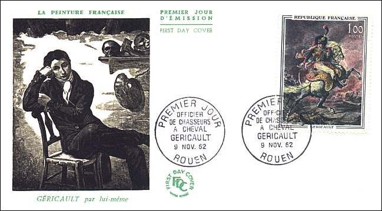
When the Musée d'Orsay was created in 1986, most of the post 1848 works left the Louvre and went to join the Impressionists in this new establishment which is close by. Since then, the collections in the Louvre have been reorganized on the 2nd floor around the Cour Carrée, Sully Wing (French paintings), and in Richelieu Wing (Northern and French schools) and Denon Wing (Italian and Spanish paintings).
|
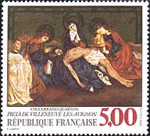 |
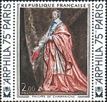 |
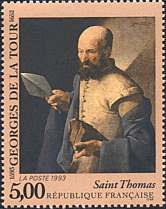 |
Link: The Louvre Museum